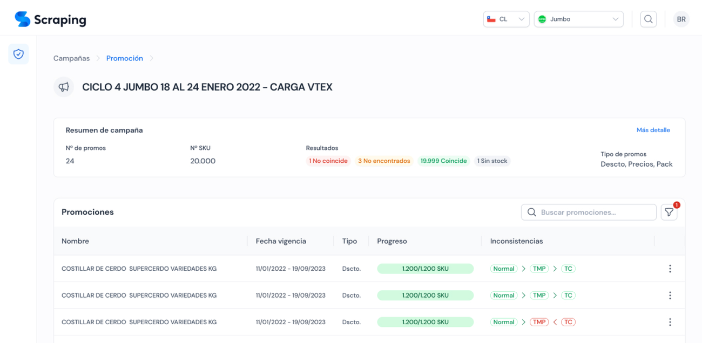
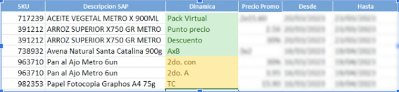
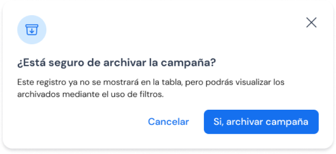
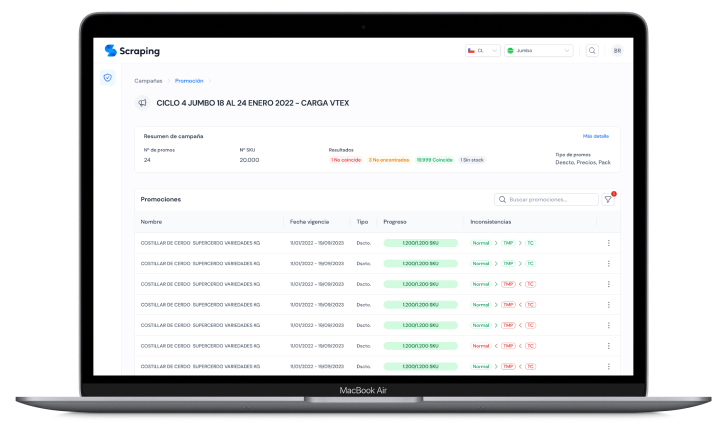

Automatizar para asegurar la verdad

El proyecto Scraping nació como una respuesta a una problemática crítica dentro de Cencosud: la falta de sincronía entre los precios publicados en los sitios web públicos y los precios registrados en los sistemas internos. Esta discrepancia se volvía especialmente crítica en temporadas de alto tráfico y alta demanda —como los Cyber Days— donde cualquier error en la publicación de precios podía afectar directamente la reputación de marca y la confianza del cliente.

Problemas en el camino
El proyecto Scraping nació como una respuesta a una problemática crítica dentro de Cencosud: la falta de sincronía entre los precios publicados en los sitios web públicos y los precios registrados en los sistemas internos. Esta discrepancia se volvía especialmente crítica en temporadas de alto tráfico y alta demanda —como los Cyber Days— donde cualquier error en la publicación de precios podía afectar directamente la reputación de marca y la confianza del cliente.
El desafío
El objetivo fue diseñar e implementar una herramienta automatizada que permitiera validar los precios publicados en los sitios públicos de Cencosud contra la información interna, garantizando la coherencia y evitando errores antes de que impactaran al cliente. Además, el producto debía ser escalable a distintas banderas y países, adaptándose a las particularidades de cada mercado.

Proceso de diseño y negociación
- El proyecto comenzó como una prueba piloto con la bandera de Supermercados Chile (Jumbo y Santa Isabel).
- Levantamiento de información: realizamos entrevistas con equipos de pricing, TI y canales digitales para entender sus flujos y puntos de dolor.
- Prototipado: desarrollamos bocetos de interfaz centrados en la facilidad de carga y lectura de datos, validando cada paso con los equipos operativos.
- Validación inicial: el MVP permitía cargar una nómina con los campos esenciales —SKU, nombre, precio original y precio oferta— para contrastarlos automáticamente con los datos publicados en los sitios web.
- Iteración: tras validar la eficacia del proceso en supermercados, ajustamos el diseño para permitir alertas automáticas y visualización rápida de inconsistencias, lo que mejoró significativamente la capacidad de reacción del equipo.

Solución final
El lanzamiento del Scraping en la bandera de Supermercados Chile fue un éxito inmediato:
- Reducción del 92% en errores de precios publicados durante el primer Cyber posterior a su implementación.
- Disminución del 70% en tiempo de validación, pasando de revisiones manuales de horas a procesos automáticos en minutos.
- Incremento del 45% en confianza interna (según encuestas internas de satisfacción de equipos de pricing y digital).
Tras el éxito local, la herramienta se escaló a la bandera de Mejoramiento del Hogar (Easy), logrando resultados similares. Finalmente, Scraping se expandió a las operaciones de Cencosud en Argentina, Colombia y Perú, adaptándose a las estructuras de datos y necesidades particulares de cada país.
Hoy, Scraping se consolidó como un producto clave dentro de la estrategia de control y calidad digital de Cencosud, garantizando que cada precio publicado sea fiel al valor real, fortaleciendo la confianza del cliente y la integridad de la marca.